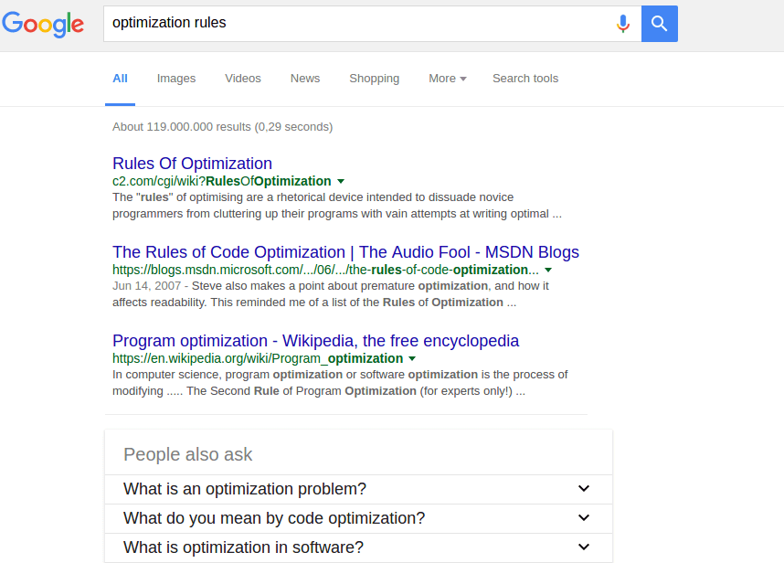
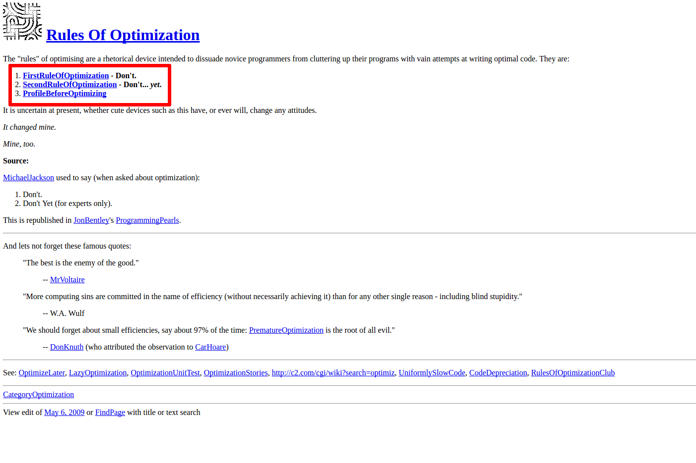
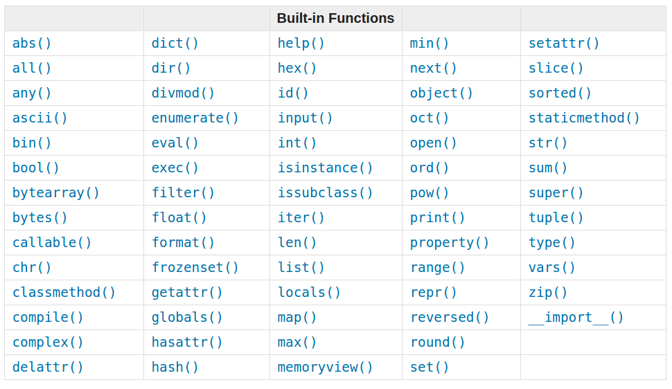

Writing faster code
Writing faster code and not hating your job as a software developer
Writing faster Python
Python was not made to be fast...
...but to make developers fast.
It was nice to learn Python;
a nice afternoon
Would you like your FIRST program EVER to be like:
public class HelloWorld {
public static void main(String[] args) {
System.out.println("Hello, world!");
}
}
or
print("Hello, world!")
 Source: https://www.shoop.io/en/blog/25-of-the-most-popular-python-and-django-websites
Source: https://www.shoop.io/en/blog/25-of-the-most-popular-python-and-django-websites
OPTIMIZATION


Don't
Don't... yet
- Finish your code
- Have tests
- Now
Profile
- cProfile
- pstats
- RunSnakeRun, SnakeViz
Levels of optimization
- Design
- Algorithms and data structures
sum = 0
for x in range(1, N + 1):
sum += x
print sum
Levels of optimization
- Design
- Algorithms and data structures
- Source code
- Build level
- Compile level
- Assembly level
- Runtime level
Optimization is all about the speed
... and memory
... and disk space
... disk I/O
... network I/O
... power consumption
... and more.
Always code as if the guy who ends up maintaining your code will be a violent psychopath who knows where you live
Writing fast Python
a.k.a source code optimization
Setup
Python 3.5.1 (IPython 1.2.1)
def ultimate_answer_to_life():
return 42
>>> %timeit ultimate_answer_to_life()
10000000 loops, best of 3: 87.1 ns per loop
2.72 × 1021 times faster than in The Hitchhiker's Guide to the Galaxy ;-)
#1 Count elements in a list
how_many = 0
for element in ONE_MILLION_ELEMENTS:
how_many += 1
print how_many
26.5 ms
print len(ONE_MILLION_ELEMENTS)
96.7 ns
274 000 times faster

And collections module.
#2 Filter a list
output = []
for element in MILLION_NUMBERS:
if element % 2:
output.append(element)
222 ms
list(filter(lambda x: x % 2, MILLION_NUMBERS))
234 ms
[item for item in MILLION_NUMBERS if item % 2]
127 ms
75% faster
#2.5 List with index
output = {}
for i in range(0, len(MILLION)):
output[i] = MILLION[i]
334 ms
output = {}
for i, element in enumerate(MILLION):
output[i] = element
220 ms
{i: element for i, element in enumerate(MILLION)}
218 ms
50% faster
#3 Permissions or forgiveness ?
class Foo(object):
hello = 'world'
foo = Foo()
if hasattr(foo, 'hello'):
foo.hello
149 ns
try:
foo.hello
except AttributeError:
pass
43.1 ns
3.5 times faster
#3 Permissions or forgiveness ?
if (hasattr(foo, 'foo') and hasattr(foo, 'bar')
and hasattr(foo, 'baz')):
foo.foo
foo.bar
foo.baz
401 ns
try:
foo.foo
foo.bar
foo.baz
except AttributeError:
pass
110 ns
3.64 times faster
#3 Permissions or forgiveness ?
class Bar(object):
pass
bar = Bar()
if hasattr(bar, 'hello'):
bar.hello
428 ns
try:
bar.hello
except AttributeError:
pass
536 ns
25% slower
#4 Membership testing
def check_number(number):
for item in MILLION_NUMBERS:
if item == number:
return True
return False
%timeit check_number(500000)
21.4 ms
#4 Membership testing
def check_number(number):
if number in MILLION_NUMBERS:
return True
return False
%timeit check_number(500000)
11.9 ms
80% faster
#4 Membership testing
%timeit check_number(100)
1.55 µs
%timeit check_number(999999)
22.9 ms
#4 Membership testing
MILLION_SET = set(MILLION_NUMBERS)
%timeit 100 in MILLION_SET
46.3 ns
33 times faster (vs list)
%timeit 999999 in MILLION_SET
63.3 ns
360 000 times faster (vs list)
%timeit set(MILLION_NUMBERS)
106 ms
#4 List sorting
sorted(MILLION_RANDOM_NUMBERS)
467 ms
MILLION_RANDOM_NUMBERS.sort()
77.6 ms
6 times faster
#5 1000 operations and 1 function
def square(number):
return number**2
squares = [square(i) for i in range(1000)]
399 µs
def compute_squares():
return [i**2 for i in range(1000)]
314 µs
27% faster
# Checking for True
if variable == True:
35.8 ns
if variable is True:
28.7 ns
24% faster
if variable:
20.6 ns
73% faster
# Checking for False
if variable == False:
35.1 ns
if variable is False:
26.9 ns
30% faster
if not variable:
19.8 ns
77% faster
# Checking for empty list
if len(a_list) == 0:
91.7 ns
if a_list == []:
56.3 ns
60% faster
if not a_list:
32.4 ns
280% faster
# Lambda vs def
Def:
def greet_def(name):
return 'Hello {}!'.format(name)
Lambda:
greet_l = lambda name: 'Hello {}!'.format(name)
Compare:
>>> %timeit greet_def('Tom')
1000000 loops, best of 3: 329 ns per loop
>>> %timeit greet_l('Tom')
1000000 loops, best of 3: 332 ns per loop
# Lambda vs def
>>> dis.dis(greet_def)
0 LOAD_CONST 1 ('Hello {}!')
3 LOAD_ATTR 0 (format)
6 LOAD_FAST 0 (name)
9 CALL_FUNCTION 1 (1 positional, 0 keyword pair)
12 RETURN_VALUE
>>> dis.dis(greet_l)
0 LOAD_CONST 1 ('Hello {}!')
3 LOAD_ATTR 0 (format)
6 LOAD_FAST 0 (name)
9 CALL_FUNCTION 1 (1 positional, 0 keyword pair)
12 RETURN_VALUE
Stack Overflow on when lambda might be necessary
[] and {}
list()
104 ns
[]
22.5 ns
4.6 times faster
dict()
161 ns
{}
93 ns
1.7 times faster
#Variables assignment
q=1
w=2
e=3
r=4
t=5
y=6
u=7
i=8
o=9
p=0
71.8 ns
q,w,e,r,t,y,u,i,o,p = 1,2,3,4,5,6,7,8,9,0
56.4 ns
27% faster (but please don't)
# Variables lookup
def squares(MILLION_NUMBERS):
output = []
for element in MILLION_NUMBERS:
output.append(element*element)
return output
149 ms
def squares_faster(MILLION_NUMBERS):
output = []
append = output.append # <= !!!!!!!!
for element in MILLION_NUMBERS:
append(element*element)
return output
110 ms
35% faster (and 27% less clear)
# XXXXXXXXXX
# SLOW
# FAST
XXXXXXX 26.5 ms vs 96.7 ns
XXXXXXXX 274 000 times faster
# XXXXXXXXXX
# SLOW
# FAST
XXXXXXX 26.5 ms vs 96.7 ns
XXXXXXXX 274 000 times faster
# XXXXXXXXXX
# SLOW
# FAST
XXXXXXX 26.5 ms vs 96.7 ns
XXXXXXXX 274 000 times faster
# SPLIT DIV
xxxxxxxx
xxxxxxxx
xxxxxxxxxx